ECLIPSE
Volume 1 · Part 10 · The Other Side of the Mask
Prologue
The Doorbell
FRIDAY · 5:46 PM
The house is ready.
The living room has been tidied, in the sense that everything that was lying around is now lying somewhere else. The television is on. A few snacks sit on the coffee table, and the kitchen has been cleared for the food Ethan insists on bringing.
Wandile stands in front of the hallway mirror, adjusting the collar of his hoodie, which is the closest thing he owns to dressing up. His phone lights up.
Wandile looks towards the front door. The doorbell rings. He opens it.
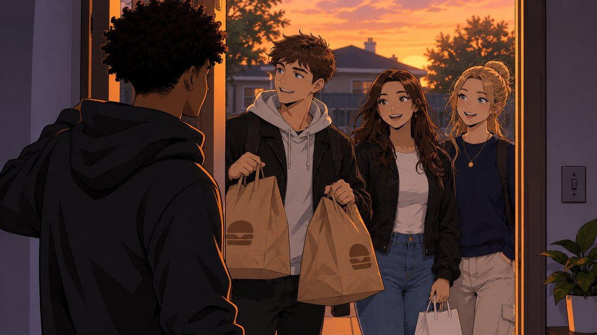
Ethan stands on the step holding two large food bags, with the expression of a man arriving at his own surprise party.
“Good evening, host.”
“You’re early.”
“And you’re welcome.”
Ethan walks straight past him. The invitation said afternoon, and Ethan has clearly interpreted that as as soon as legally possible.
“You could at least pretend this is my house.”
“I respect your property. I just have priorities.”
Charlotte appears behind him, carrying a small bag. “He talked about food the entire journey.”
“Because nobody else was discussing the important details.”
Olivia arrives last. “Hi.”
“Hey. Come in.”
She smiles and steps inside. “Your house looks nice.”
“Thanks. I tried to make it presentable.”
“Unlike Ethan,” says Charlotte, “who has already started treating the kitchen like a restaurant.”
From the kitchen, a voice: “I CAN HEAR YOU.”
Everyone laughs. Wandile closes the door.
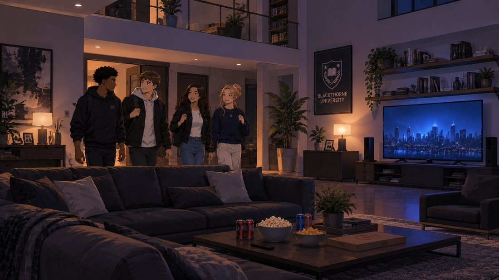
For the first time in a long while, he isn’t rushing somewhere, investigating something or trying to solve a problem. His friends are here.
And tonight, that’s enough.
Chapter 1
House Rules
FRIDAY · 6:02 PM
The living room is already becoming chaotic.
Ethan has taken over the coffee table and arranged the food into what he calls zones and Charlotte calls a hazard. Charlotte is examining the television’s streaming options as if she is about to sit an exam on them. Olivia sits on the sofa, looking through the available films. Wandile returns from the kitchen with drinks.
“Right. A few rules.”
“Here we go.”
“Don’t break anything. Don’t leave food everywhere. And please don’t change every setting on my television.”
Ethan looks offended. “I have never damaged a television.”
“You once tried to fix one by hitting it,” says Charlotte.
“It was an older model.”
“You hit it?” says Olivia.
“It responded.”
“It stopped working,” says Wandile.
“Temporarily.”
Charlotte shakes her head. “I can’t believe we’re friends with him.”
Wandile sits down. “You invited yourselves into my house. You made your choice.”
“And what an excellent choice it was.”
They settle into the living room, and the atmosphere is comfortable. Nobody notices the discreet storage entrance elsewhere in the house. Nobody knows what lies behind it.
And Wandile intends to keep it that way.
Chapter 2
The Movie Debate
FRIDAY · 6:34 PM
Three different films glow on the television screen. Ethan points at the first one. “That one.”
“Absolutely not,” says Charlotte.
“You haven’t even watched it.”
“I don’t need to.”
Olivia scrolls through the choices. “What about this one?”
Wandile reads the description. “Looks decent.”
“It’s nearly three hours,” says Ethan.
“You wanted a movie.”
“I wanted entertainment, not a university degree.”
Charlotte takes the remote and lifts it out of reach, which Ethan treats as an act of war.
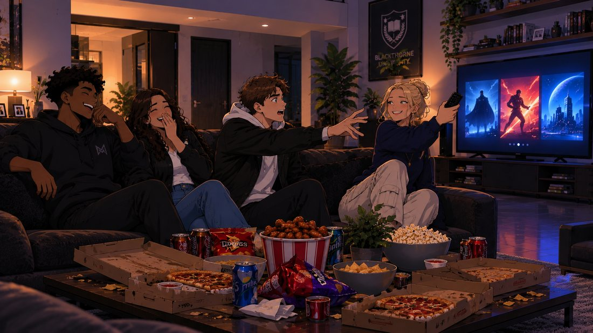
“We’re watching something that doesn’t require a committee meeting.”
She selects a film.
“I object.”
“Your objection has been noted.”
The film begins. A few minutes later, Ethan is already eating. Wandile looks at him. “You haven’t even watched the opening.”
“I can do both.”
“Apparently,” says Olivia.
Wandile laughs. Olivia looks over at him. “You seem different tonight.”
“Different how?”
“Relaxed.”
He considers that. “Maybe I am.”
“It’s nice.”
Their eyes meet briefly.
Then Ethan interrupts. “Does anyone want wings?”
“You have been eating for twenty minutes,” says Charlotte.
“And I’m still generous.”
The moment passes, but Olivia is still smiling.
Chapter 3
The Life He Wants to Protect
FRIDAY · 7:18 PM
The film continues. Wandile gets up to collect more drinks. As he passes the hallway, his phone vibrates. A notification from the private Eclipse system appears.
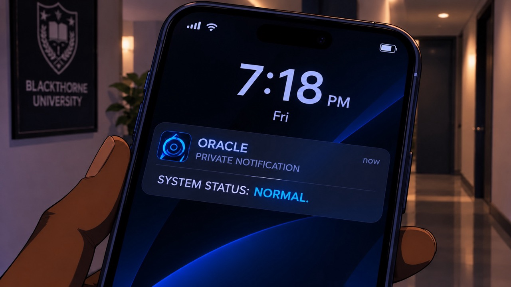
Wandile glances at it. Everything is functioning as expected. He dismisses it without opening the system, because tonight is not for work.
He returns to the living room. “Everything okay?” asks Olivia.
“Yeah. Just a notification.”
He hands her a drink. “Thanks.”
On the television, the characters are arguing over something ridiculous. Ethan is practically shouting at the screen.
“WHY WOULD YOU DO THAT?”
“Because it’s a film, Ethan,” says Charlotte.
“That doesn’t excuse poor decision-making.”
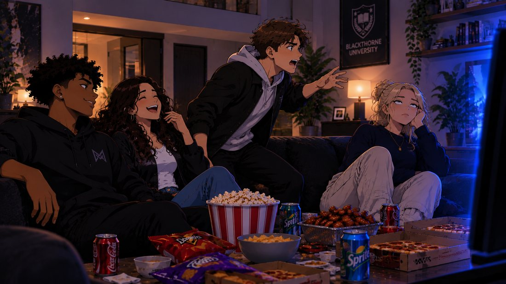
Wandile laughs. He looks around the room: Ethan arguing with fictional characters, Charlotte making sarcastic comments, Olivia sitting comfortably beside him.
These are the moments he doesn’t want to lose. For all the equipment and preparation in the hidden room, this is the life he wants to protect.
Chapter 4
A Little Quieter
FRIDAY · 8:06 PM
The film has ended. Ethan is in the kitchen, searching for something else to eat. Charlotte is scrolling through her phone. Wandile stands near the doorway, looking at the garden through the window, where the sky has turned the colour of a bruise that is doing very well.
Olivia approaches. “Escaping?”
“Just taking a break from Ethan’s commentary.”
She laughs. “Fair enough.”
She stands beside him.
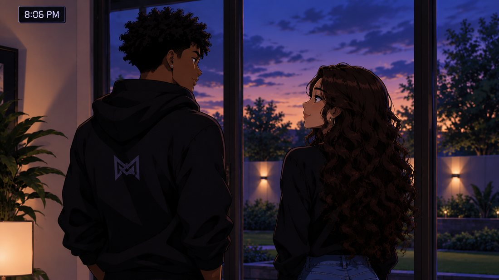
For a moment, neither of them speaks.
“I like coming here,” says Olivia.
“You’re welcome here.”
“I know. I mean it, though. It’s comfortable. You don’t make everything feel like a big event.”
“That’s because Ethan makes enough of a big event for everyone.”
They both laugh. Olivia looks towards the living room. “I think Charlotte secretly enjoys having us all together.”
“She’d never admit it.”
“Neither would you, probably.”
Wandile looks at her. “What makes you say that?”
“You act like you don’t need anyone around, but I think you actually enjoy having people here.”
He thinks about that. “Maybe I just don’t say it enough.”
Olivia smiles. “Well, I’m glad you’re saying it now.”
A quiet moment follows. Then, from the kitchen: “WANDILE! WHERE DO YOU KEEP THE EXTRA PLATES?”
Wandile closes his eyes briefly. “Of course.”
Olivia laughs. “Go save your kitchen.”
Chapter 5
The Conversation
FRIDAY · 8:42 PM
Charlotte has suggested a break from films, and the four friends are sitting around the living room, talking. Ethan is telling a story about something that happened at university.
“And then the lecturer looks directly at me.”
“Because you were talking,” says Charlotte.
“I was contributing.”
“You were asking whether the assignment could be submitted next semester,” says Wandile.
“A reasonable question.”
Olivia laughs. “You really do make everything harder than it needs to be.”
“I prefer to call it creative problem-solving.”
Charlotte looks at Wandile. “What about you? Have you decided what you’re doing after this semester?”
“Still working it out.”
“You always say that,” says Olivia.
“Because it’s true.”
“At least he’s honest,” says Charlotte.
Ethan leans forward. “I have decided.”
Everyone looks at him. “Oh?” says Wandile.
“I’m becoming rich.”
A pause.
“That’s the plan?” says Charlotte.
“It’s a very good plan.”
“What’s step two?”
“I’ll work that out after step one.”
The room erupts in laughter. Somewhere between the third argument and the fourth plate of wings, the conversation stopped being about anything in particular and started being about everything.
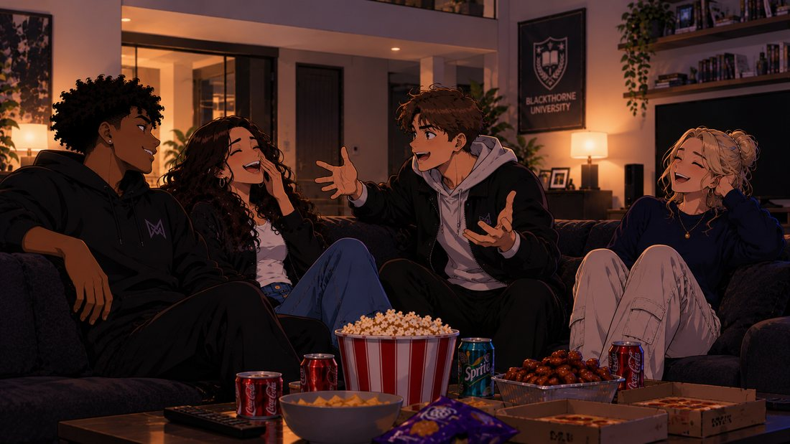
Olivia looks at Wandile. “I think we need to make sure you don’t become too serious.”
“I have you lot for that.”
“Unfortunately, yes,” says Charlotte.
Chapter 6
The Message
FRIDAY · 9:16 PM
Wandile’s phone vibrates on the table, among the crumbs. He glances at it. A private system notification.
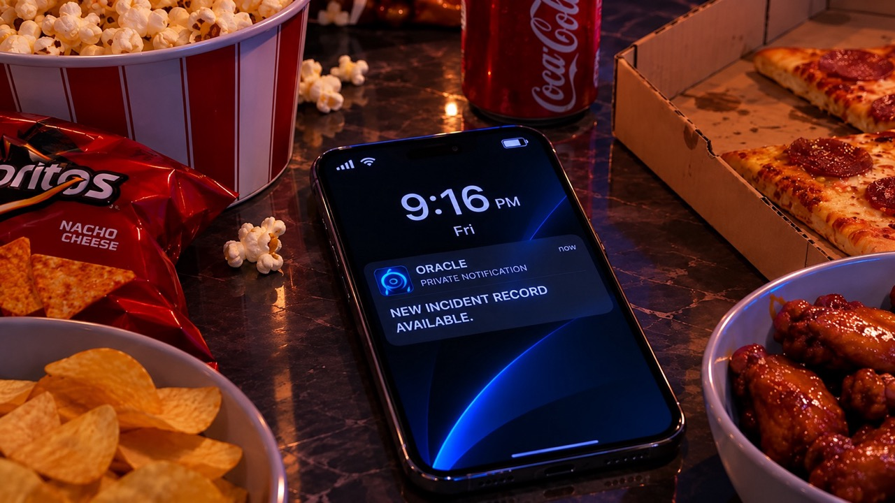
His expression changes slightly. He picks up the phone. The notification contains no urgent warning, only confirmation that the Meridian file has received an update. He locks the screen.
“Not tonight.”
Olivia notices him looking. “Everything okay?”
“Yeah. Just something I can deal with later.”
“You sure?”
“I’m sure.”
He puts the phone away, and the moment passes.
In a separate office, far from the house, the Meridian security operator sits in front of his monitor. The Eclipse file is open, and a new incident record has been added to the folder. He reviews it.
SUBJECT: ECLIPSE.
IDENTITY: UNKNOWN.
STATUS: UNDER REVIEW.
He still has no identity, no address and no face, only the masked figure from the depot.
“Still nothing,” he mutters.
He closes the file. He has not informed Adrian. For now, the investigation remains his responsibility, and he intends to keep it quiet until he has something worth reporting.
Chapter 7
Just the Two of Them
FRIDAY · 9:48 PM
Ethan and Charlotte are in the kitchen, and their voices carry into the living room, mostly Ethan’s. Wandile and Olivia remain on the sofa. In the kitchen, a cupboard slams, followed by Charlotte saying something sharp that does not stop Ethan from humming. The television is paused.
Olivia turns towards him. “Can I ask you something?”
“Sure.”
“Do you ever feel like you’re always trying to keep everything together?”
Wandile looks at her. “Sometimes.”
“You don’t have to do that all the time.”
He is quiet for a moment. “I know.”
“I’m serious.”
“I know you are.”
She looks down briefly, then back at him. “I like spending time with you, Wandile.”
He smiles. “I like spending time with you too.”
“I wasn’t sure if you knew that.”
“I had an idea.”
“An idea?”
“A fairly strong one.”
She laughs softly. “You’re impossible.”
“I’ve been told.”
A comfortable silence settles between them.
“Olivia?”
“Yeah?”
They look at each other for a moment. And then they share a gentle first kiss.
It is brief, sweet and unhurried. When they pull apart, both of them are smiling.
“I’ve wanted to do that for a while,” says Olivia.
“So have I.”
From the kitchen, with perfect timing: “WHY IS IT TAKING YOU TWO TWENTY MINUTES TO PICK A MOVIE?”
Wandile closes his eyes. Olivia starts laughing.
“He has the worst timing.”
“Maybe we should tell him we already picked one.”
“He’ll ask which one.”
“Then we’ll have to think of something.”
They exchange another smile.
Chapter 8
Nothing Changes. Everything Does.
FRIDAY · 10:02 PM
The four friends are back in the living room. Ethan is holding the remote like a sceptre.
“Right. I’ve selected the next film.”
“Without asking anyone?” says Charlotte.
“Leadership requires decisive action.”
“You chose the last one too,” says Wandile.
“And I was right.”
Olivia sits beside Wandile. Their shoulders touch, and they exchange a small glance. Charlotte notices the change in their expressions. She looks from Olivia to Wandile, and a faint smile appears on her face. She says nothing.
Ethan’s choice turns out to be exactly the same genre as the first film, which he defends as consistency. Ethan, meanwhile, is still arguing about the film. “Can we please watch something without a debate?”
“You started the debate.”
“I started a discussion.”
Wandile laughs. For the rest of the evening, they watch the film, share food and continue their usual arguments. Nothing about the room changes.
But something between Wandile and Olivia has.
Chapter 9
After Everyone Leaves
FRIDAY · 11:37 PM
The front door closes. Ethan, Charlotte and Olivia have left, and the house is quiet again.
Wandile stands in the hallway for a moment, looking at the empty living room. There are a few plates on the table, cushions out of place and an empty food container that Ethan forgot to take, which is statistically the only thing he has ever left behind. His name is written on the lid in marker, twice. Wandile smiles. He starts tidying up.
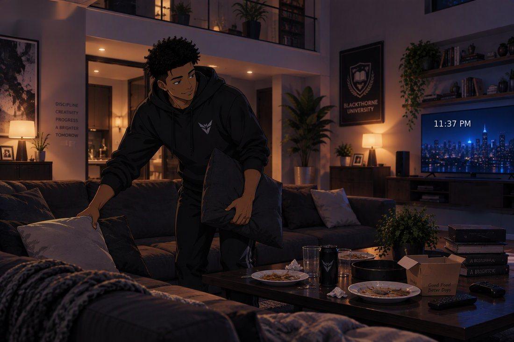
His phone lights up.
Wandile reads Olivia’s message, then replies.
He puts the phone down. A few seconds later, another notification appears.
Wandile looks towards the storage area. He knows the lair is ready. The suit is ready. The equipment is ready. But tonight, he didn’t need any of it.
“Oracle?”
“Yes?”
“Good work.”
“Acknowledged. I shall file it somewhere safe.”
“And don’t make a big deal out of it.”
“I will endeavour to contain my enthusiasm.”
Wandile laughs. He turns off the living-room lights.
Final Page
The Other Side of the Mask
FRIDAY · 11:54 PM
The camera moves through the house. It passes the living room, the kitchen and the hallway. Then it reaches the concealed entrance. The panel remains closed.
Behind it, the completed Eclipse headquarters sits ready. The workstation wakes briefly, and a status display appears.
ECLIPSE — VERSION TWO
STATUS: FULLY OPERATIONAL
A second monitor displays the Meridian file. The words remain visible.
SUBJECT: ECLIPSE.
IDENTITY: UNKNOWN.
STATUS: UNDER REVIEW.
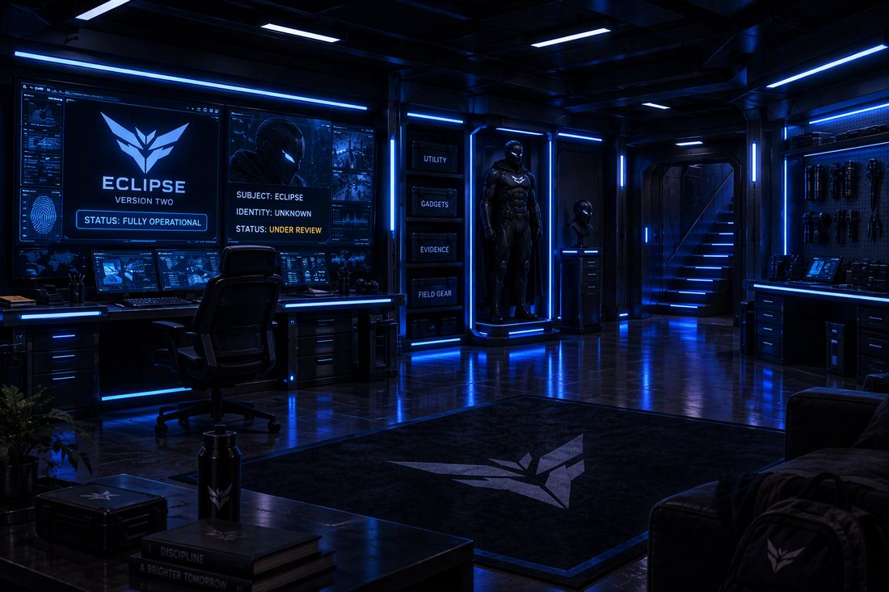
The camera pulls back, away from the suit, away from the screens, up through the ordinary house to a bedroom where the other half of the story is lying on top of the covers. There is no mask here and no suit. Upstairs, Wandile is simply a young man in his home, thinking about the evening he has just had.
His phone lights up one last time. A new message from Olivia.
Wandile smiles at the screen.
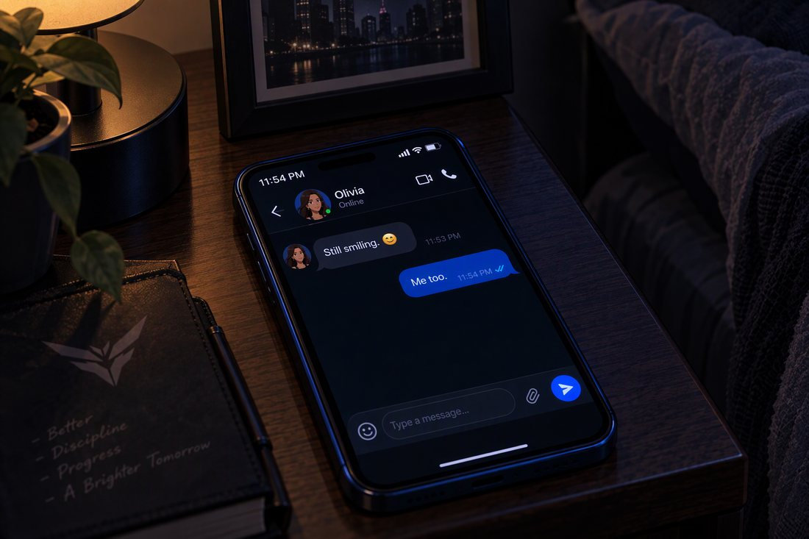
He puts the phone down. The room goes dark.
ECLIPSE: THE OTHER SIDE OF THE MASK.
END OF PART 10